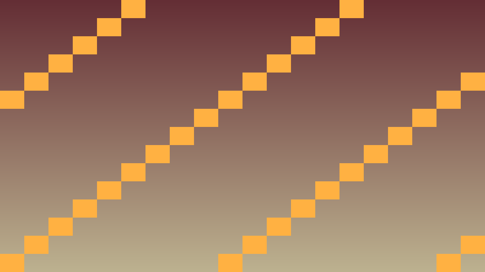
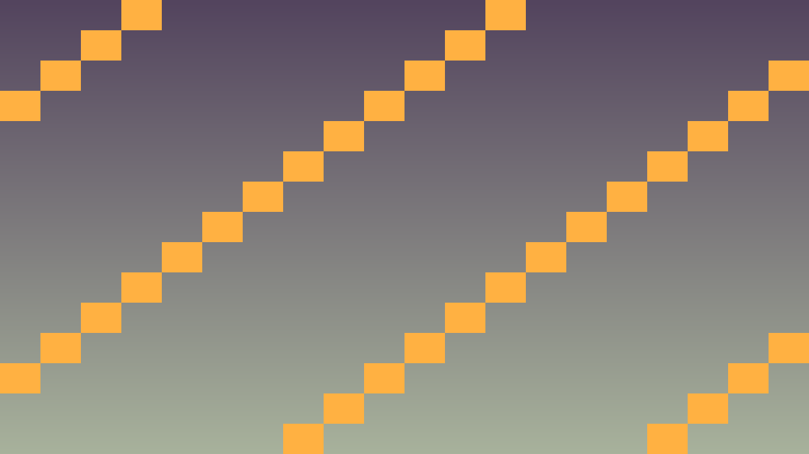
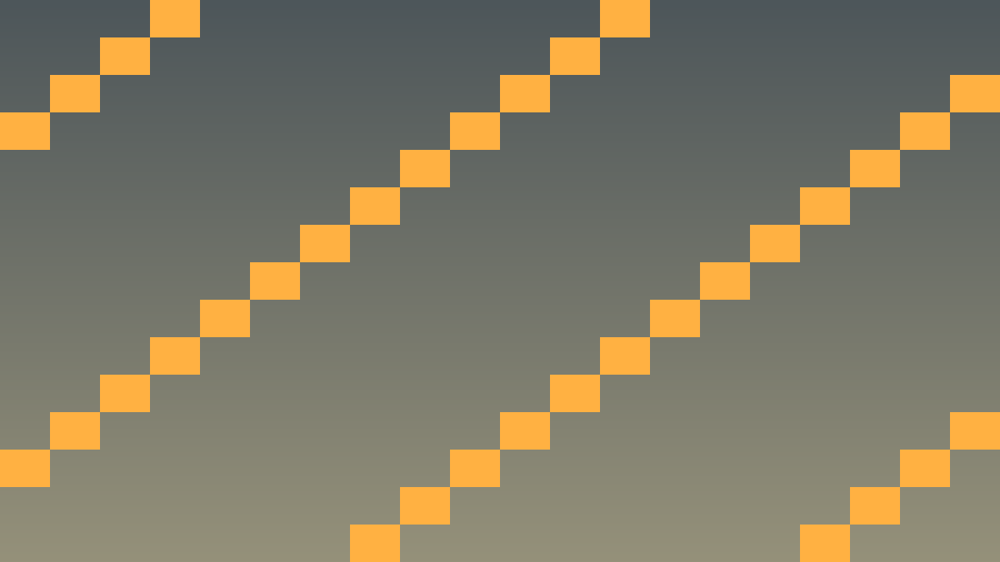

6.5 Eksports un publicēšana
Stundas uzdevums: Eksportēt Godot C# spēli darbvirsmas platformai un publicēt lejupielādējamu versiju internetā.
80 min plāns: Teorija un paraugs (~10 min) · 1. uzdevums (~20 min) - eksportē spēli uz datoru · 2. uzdevums (~25 min) - pārbaudi build (būvējums) ārpus redaktora · 3. uzdevums (~20 min) - publicē lejupielādējamu versiju internetā · Iesniegšana (~5 min).
Pirms sāc: atver savu spēli. Šodien no projekta taisīsi failu, ko var iedot citam cilvēkam. Pirms sāc, lejupielādē export templates (eksporta veidnes): Editor -> Manage Export Templates.
Failu ceļi: ceļi ir norādīti no tava Godot projekta mapes, kur atrodas project.godot; piemēram, Scripts/Player.cs Godot panelī ir res://Scripts/Player.cs. Ja norādītais fails jau ir izveidots, atver un papildini to.
Jaunus C# failus veido mapē Scripts, scēnas — norādītajā ceļā; trūkstošās mapes izveido. Ja tavā projektā skripts glabājas citur, rediģē esošo failu. using direktīvas raksti faila sākumā, laukus un metodes — klases iekšienē. Esošu _Ready() vai _PhysicsProcess() papildini, neveido otru tāda paša nosaukuma metodi.
Teorija: programmatūras būvēšana, eksportēšana un izplatīšana
No pirmkoda līdz patstāvīgam būvējumam (Export Presets un .pck)
Projekts izstrādes vidē ir kā konditorejas virtuve ar visām izejvielām un krāsnīm, turpretim eksportēts būvējums (build) ir gatavs, iepakots produkts, ko lietotājs var darbināt savā datorā bez Godot redaktora un C# kompilatora. Eksportēšanas laikā notiek trīs saistīti procesi:
- C# kompilācija (
dotnet build): visi.cspirmkoda faili tiek pārbaudīti un kompilēti.NETbinārajās bibliotēkās (.dll). - Resursu sapakošana (
.pck): scēnas, attēli un skaņas nores://tiek apvienoti vienotā, tikai lasāmā resursu pakotnē. - Platformas eksporta profils (
Export PresetunExport Templates): gatavā pakotne tiek savienota ar izvēlētās operētājsistēmas izpildfailu (.exeWindows,.x86_64Linux vai.appmacOS vidē). Godot 4.NET (C#)projektiem izmanto tieši šos darbvirsmas profilus, jo tīmekļa pārlūka eksports C# vidē netiek lietots.
Pārbaude ārpus redaktora, versiju kontrole (.gitignore) un licences
Lai izplatāmā lietotne uzticami darbotos cita cilvēka datorā, ievēro trīs programmatūras inženierijas principus:
- Pilna arhīva testēšana: izpildfails nevar darboties bez blakus esošā
.pckfaila un.NETpavadošajām bibliotēkām, tāpēcZIParhīvā iekļauj visu būvējuma mapes saturu un pirms publicēšanas to izpako atsevišķā mapē un pārbauda ar aizvērtu redaktoru. - Krātuves tīrība (
.gitignore):Gitversiju kontrole ir paredzēta cilvēka rakstītam pirmkodam un scēnu aprakstiem, nevis desmitiem megabaitu lieliem kompilētiem binārajiem failiem, tāpēc mapibuild/vienmēr iekļauj failā.gitignore. - Dokumentācija un autortiesības (
IP rights): publiskojot programmu, pievieno skaidru palaišanas un vadības aprakstu, kā arī korekti norāda visu izmantoto trešo pušu resursu (skaņu, attēlu, fontu) autorus atbilstoši to licencei (piemēram,MIT,CC0vaiCC BY).
Kā šo izmantot projektā
Atceries: ar redzamu efektu redaktorā nepietiek. Paskaidro, kura C# class (klase) glabā stāvokli, kura method (metode) to maina un kā Godot node (mezgls) struktūra izmanto šo kodu.
Pārbaudi: UI (lietotāja saskarne) signal (signāli), skaņas darbības, debug (atkļūdošana) izvade un publicēšanas sagatave ir sasaistīta ar C# spēles stāvokli.
public class PolishCheckpoint
{
public string Lesson = "6.5 Eksports un publicēšana";
public bool UsesCSharp = true;
public bool ConnectsUiSignals = true;
public bool RoutesAudioEvents = true;
public bool VerifiesExportBuild = true;
}Praktiskie uzdevumi
1. uzdevums -
Eksportē spēli uz datoru
Kur strādāt: Eksportu veic Godot Project → Export un saglabā projekta build/ mapē. Rindu build/ pievieno projekta saknes .gitignore; teorijas komandu dotnet build izpildi terminālī no mapes ar .csproj.
Beigās tev būs fails, ko var palaist bez Godot.
- Atver Project -> Export.
- Nospied Add un izvēlies savu platformu (Windows, Linux vai macOS).
- Pārbaudi, vai zem loga nav sarkana brīdinājuma par trūkstošiem templates.
- Nospied Export Project un saglabā mapē
build/. - Aizver Godot pilnībā.
- Palaid eksportēto failu un izspēlē vienu līmeni.
- Pievieno
.gitignorefailam rindubuild/.
# Darbvirsmas eksporta soļu kopsavilkums C# projektam:
# 1. Editor → Manage Export Templates (lejupielādē eksporta veidnes)
# 2. Project → Export → Add → Windows Desktop / Linux / macOS
# 3. Pārbaudi C# būvējumu terminālī:
dotnet build
# 4. Export Project → build/MyGame.exe vai build/MyGame.x86_64Gatavs, kad: eksportētā spēle palaižas bez Godot redaktora, un mape build/ nenonāk GitHub.
2. uzdevums -
Pārbaudi build ārpus redaktora
Kur strādāt: Pārbaudi un arhivē build/ mapes saturu; pārbaudes rezultātus raksti projekta README.md.
Beigās tu zināsi, ka spēle darbojas arī bez Godot redaktora.
- Aizver Godot pilnībā, lai nepārbaudītu spēli redaktorā.
- Palaid eksportēto failu no
build/mapes. - Izspēlē vismaz vienu līmeni un pārbaudi UI, skaņu un saglabāšanu.
- Pārbaudi, ka blakus eksportam atrodas nepieciešamie dati, piemēram
.pckvai platformai vajadzīgās library (bibliotēkas). - Saspied visu build mapes saturu ZIP arhīvā.
- Izpako ZIP citā mapē un palaid spēli vēlreiz.
- Pieraksti, kāpēc jāpārbauda tieši izpakots arhīvs, ne tikai Godot projekts.
Gatavs, kad: izpakotais arhīvs palaiž spēli ārpus Godot redaktora, un spēles pamatfunkcijas joprojām darbojas.
3. uzdevums -
Publicē lejupielādējamu spēli internetā
Kur strādāt: Itch.io augšupielādē 2. uzdevumā izveidoto ZIP. Publisko saiti un lejupielādes pārbaudes rezultātu pievieno README.md.
Beigās cits cilvēks varēs lejupielādēt un palaist tavu spēli.
- Izveido kontu vietnē
itch.io. - Nospied Augšupielāde new project (jauns projekts) un izvēlies Downloadable type (tipu).
- Augšupielādē ZIP arhīvu ar eksportēto darbvirsmas build.
- Norādi, kurai platformai tas paredzēts: Windows, Linux vai macOS.
- Pievieno īsu aprakstu, vadību un divus ekrānuzņēmumus.
- Saglabā un atver publisko saiti citā datorā vai pārlūkā.
- Pieraksti, vai lejupielāde un palaišana strādāja tāpat kā tavā datorā.
Gatavs, kad: spēli var lejupielādēt no publiskās saites, izpakot un palaist bez Godot redaktora.
Papildu uzdevums - Uzraksti spēles aprakstu
Kur strādāt: Aprakstu, vadību un resursu autorus ieraksti itch.io spēles lapā un saglabā arī projekta README.md.
Ja pamatdarbs ir gatavs, noformē spēles lapu.
- Uzraksti divus teikumus par to, kas spēlē jādara.
- Pievieno vadības aprakstu: kuri taustiņi ko dara.
- Augšupielādē divus ekrānuzņēmumus.
- Pievieno savu vārdu kā autoru un norādi uz izmantotajiem resursiem.
- Palūdz klasesbiedram izspēlēt spēli, neko nepaskaidrojot.
Gatavs, kad: klasesbiedrs saprata, kā spēlēt, tikai izlasot tavu lapu.
Ko sagatavo
Stundas mērķis: Tava Godot C# spēle ir eksportēta kā darbvirsmas programma, pārbaudīta ārpus redaktora un publicēta internetā kā lejupielādējams ZIP arhīvs.
GitHub krātuvē jābūt:
- README.md ievietota publiskā saite uz tavu spēli itch.io vietnē.
- Ekrānuzņēmums ar eksportēto spēli, kas darbojas ārpus Godot redaktora.
- Ekrānuzņēmums ar Godot eksporta logu, kurā redzams darbvirsmas profils.
- README.md: kāpēc Godot 4 C# projektam šajā kursā publicējam lejupielādējamu darbvirsmas build, nevis Tīmekļa build.
Kā iesniedz: Veic commit (izmaiņu fiksējums) un push (nosūtīšana uz attālo krātuvi). Skolotāja norādītajā vietā ievieto tikai GitHub krātuves saiti; visiem prasītajiem failiem, README.md pierakstiem un pierādījumiem jābūt pašā krātuvē.
Biežākās kļūdas
- C# kods nav kompilēts: Pirms eksportēšanas nospied Godot Build vai palaid
dotnet build. - Spēle nepalaižas: Pārliecinies, ka ZIP arhīvā ir visi eksportētie faili, ne tikai
.exe. - Liels eksportēto failu izmērs: Samazini attēlu un skaņas failu izmērus.
Godot ekrānuzņēmumi



Koda piemērs (paplašināts)
using Godot;
public struct ExportChecklist
{
public bool HasExportTemplate;
public bool HasDotnetBuild;
public bool HasDesktopExecutable;
public bool TestedOutsideEditor;
public bool WebLimitationDocumented;
public bool IsReadyToPublish()
{
return HasExportTemplate
&& HasDotnetBuild
&& HasDesktopExecutable
&& TestedOutsideEditor
&& WebLimitationDocumented;
}
}
public partial class ExportReporter : Node
{
public void PrintStatus(ExportChecklist checklist)
{
GD.Print("Platform: ", OS.GetName());
GD.Print("Ready to publish: ", checklist.IsReadyToPublish());
}
}